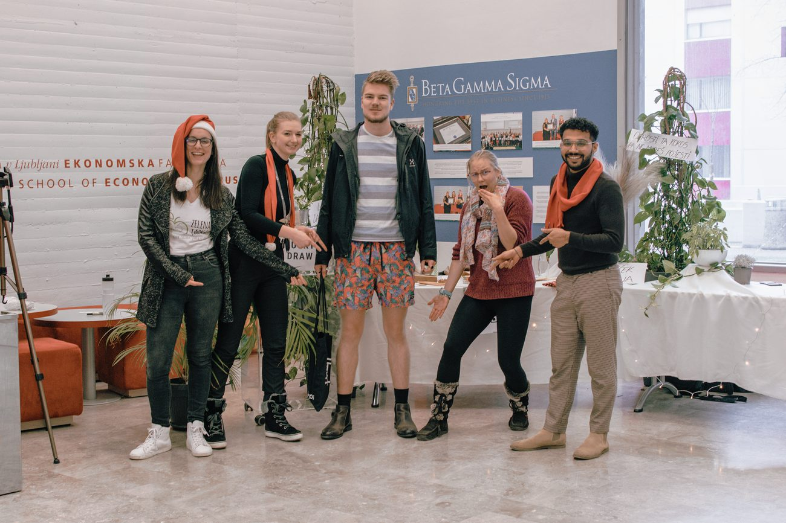
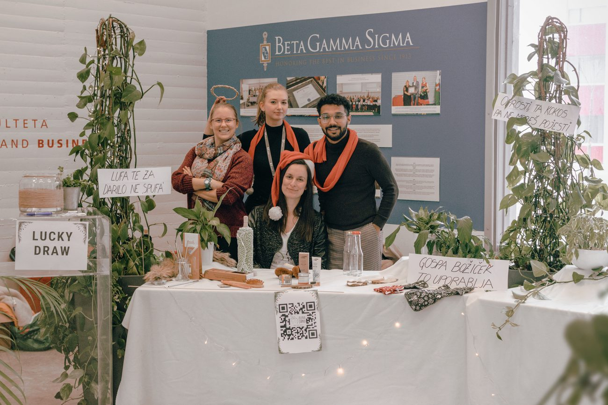
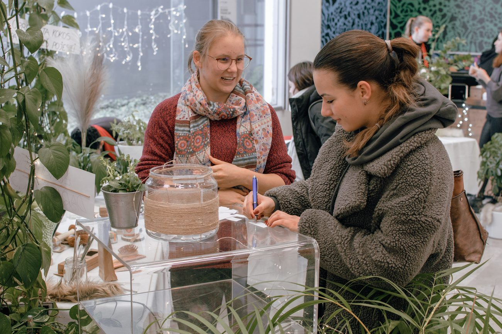
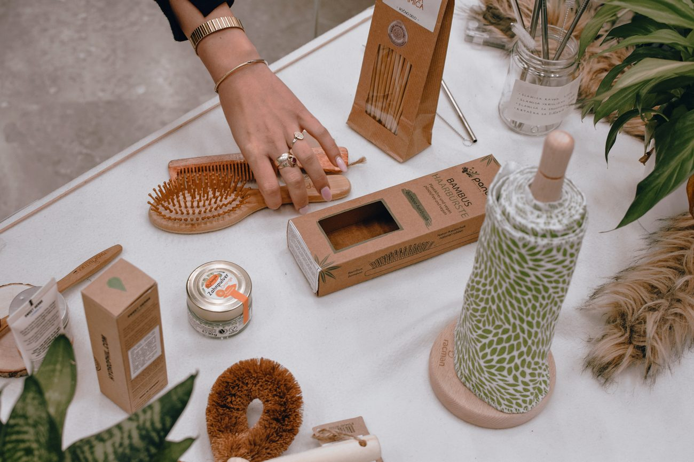
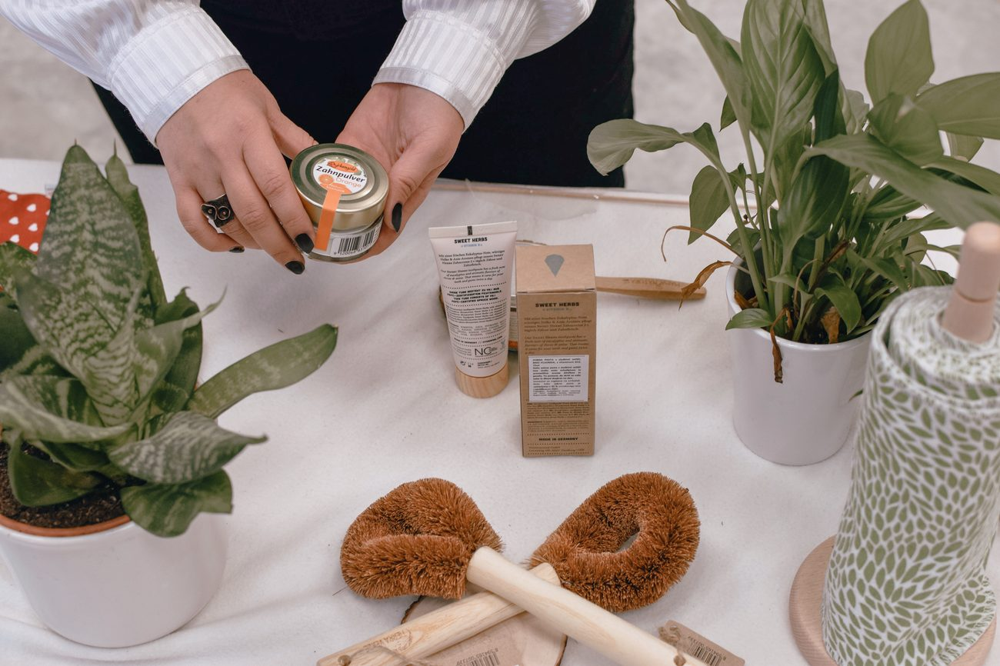

I co-organised the Festive EcoFair at the Faculty of Economics, University of Ljubljana, with two fellow master's students. It was a student-led sustainability fair that let around 500 students and visitors get hands-on with everyday products designed to cut waste. The idea was simple: alternative products are unfamiliar, and people reject what they cannot touch. So instead of selling anything, we turned the fair into a place to pick things up, try them, and see for yourself.
What I organised
- Co-created and ran the concept end to end with a three-person team: a fair where sustainable products were shown as living exhibits rather than sold, spanning hygiene, kitchen and everyday goods.
- Reached out to and secured brands who donated their products in exchange for exposure to a student audience, social-media content and new-customer reach. No product was sold on the day; every item was there to be handled and understood.
- Designed the experience around a behavioural insight: letting people physically hold and test a product lowers the fear of the unfamiliar and makes them far more likely to adopt it. Visitors could feel the difference between a dry and a soaked plant-fibre sponge, wash a dish with it, or see how a wooden brush revives once it wears down.
- Gamified the day with Eco Games: mini games at the product stands and a lucky draw whose top prize, an eco gift from our partner, rewarded the most engaged visitors.
- Structured the event in two parts: a daytime programme of student games and product demos, then an evening event to keep the space alive and the conversations going.
- Handled promotion and production: a photo booth branded with partner logos, a penguin mascot stand, greenery dressing the venue, and a campaign across the faculty newsletter and social media.
Partner
Zelena Japka, one of Slovenia's larger eco stores, partnered on the fair and provided the eco gift awarded to participants of the Eco Games.
Key skills
- Event Organisation
- Partnerships
- Behavioural Insight
- Sustainability
- Brand Outreach
- Volunteer Coordination
Photos from the day




